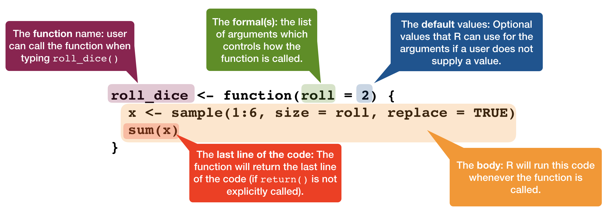
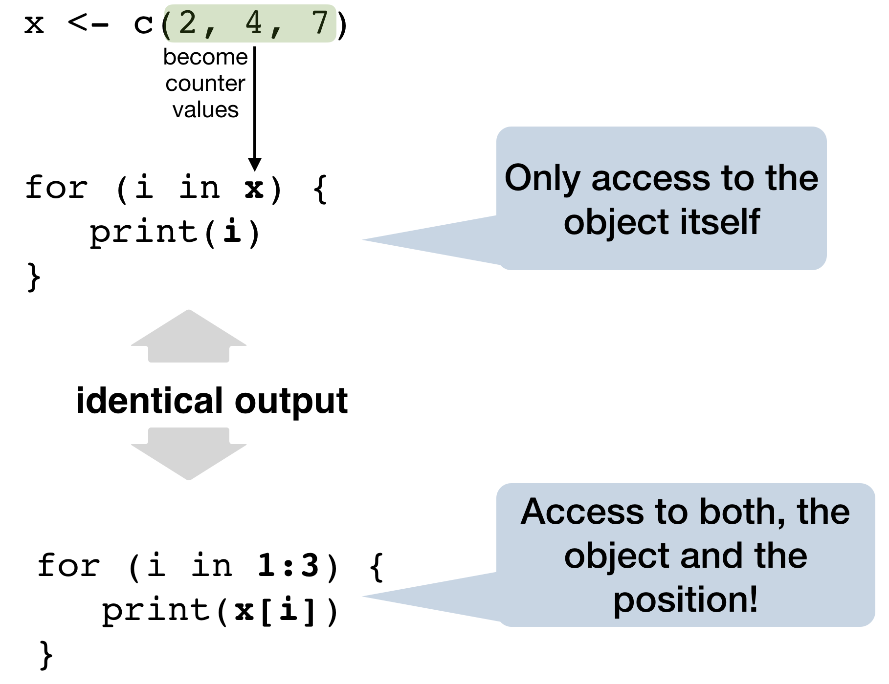
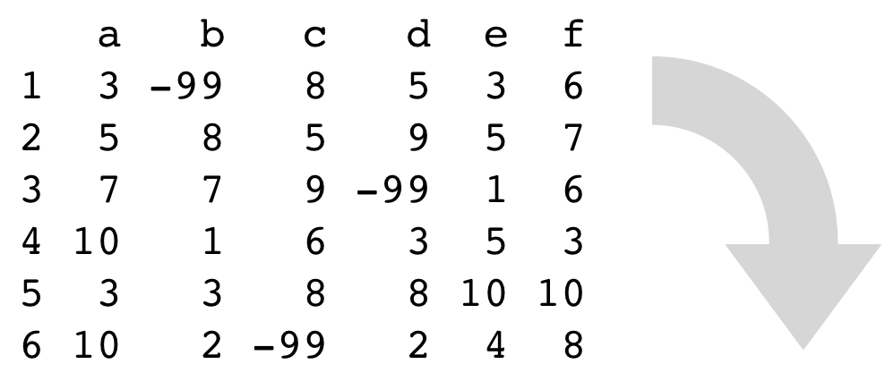

Data Analysis with R
17 - Functions and Iteration 1 (Loops)
Saskia A. Otto
Postdoctoral Researcher
Functions

Functions are the core of reproducible research
- Help you to structure your work.
- Reading in data
- Data processing
- Visualisation
- Divide complex problems into small "simple" units.
- Re-use your functions whenever you need them!
- Share your work with others!
Function components

Lexical scoping
Scoping is the set of rules that govern how R looks up the value of a symbol.
x <- 10
x
## [1] 10
How does R know that x equals 10 ?
Principles of Lexical Scoping
- Name masking
- Functions vs. variables
- A fresh start
- Dynamic lookup
1. Name masking
f <- function() {
x <- 2
y <- 3
x * y
}
f()
## [1] 6
- value for x found in f
- value for y found in f
x <- 2
g <- function() {
y <- 3
x + y
}
g()
## [1] 5
- value for x NOT found in f
- check global environment → value for x found
- value for y found in f
1. Name masking - Nested functions

1. Name masking - Nested functions

1. Name masking - Variables exist locally
add_one <- function(x) {
add_this <- 1
x + add_this
}
add_one(5)
## [1] 6
add_this
## Error in eval(expr, envir, enclos): object 'add_this' not found

xandadd_thisare not present in the global environment- they exist locally in
add_one()
2. Functions vs. variables

2. Functions vs. variables

2. Functions vs. variables - Exception
n <- function(x) {
x / 2
}
o <- function() {
n <- 10
n(n)
}
o()
## [1] 5

Try to avoid this whenever possible.
3. A fresh start

What gets returned each time?
j()
a <- j()
j()
j()
a <- j()
j()
3. A fresh start
What gets returned each time?
j()
## [1] 1
a <- j()
j()
## [1] 2
j()
## [1] 2
a <- j()
j()
## [1] 3
4. Dynamic lookup
R looks for values when the function is run, not when it’s created.
my_mean <- function(x) {
sum(x) / count
}
count <- 10
my_mean(rep(2, times = 10))
## [1] 2
my_mean(rep(2, times = 5))
## [1] 1
→ Hard to spot because occurring errors depend on the global environment.
Your turn...
What is the output of the following code snippets?
func1 <- function(y) {
func2(z = y)
}
func2 <- function(z) {
3 * z
}
func1(4)
z <- 3
func1(4)
y <- 3
func <- function(x, y) {
x ^ y
}
func(2, 2)
x
y
func(3)
x1 <- 10
func <- function() {
x1 * 2
}
func()
x1 <- 5
func()
f <- function(x) {
f <- function(x) {
f <- function(x) {
x ^ 2
}
f(x) + 1
}
f(x) * 2
}
x <- 10
f(x)
The 4 Golden Rules
Every function should be...
selfcontained,
able to solve one particular problem,
as small as possible and as complex as needed,
properly documented
Which functions are selfcontained?
func1 <- function(y) {
func2(z = y)
}
func2 <- function(z) {
3 * z
}
func1(4)
z <- 3
func1(4)
y <- 3
func <- function(x, y) {
x ^ y
}
func(2, 2)
x
y
func(3)
x1 <- 10
func <- function() {
x1 * 2
}
func()
x1 <- 5
func()
f <- function(x) {
f <- function(x) {
f <- function(x) {
x ^ 2
}
f(x) + 1
}
f(x) * 2
}
x <- 10
f(x)
How to convert code to a function?
df <- data.frame(replicate(6, sample(c(1:10, -99), 6, rep = TRUE)))
names(df) <- letters[1:6]
df
## a b c d e f
## 1 3 -99 8 5 3 6
## 2 5 8 5 9 5 7
## 3 7 7 9 -99 1 6
## 4 10 1 6 3 5 3
## 5 3 3 8 8 10 10
## 6 10 2 -99 2 4 8
Replace -99 with NA
How to convert code to a function?
df$a[df$a == -99] <- NA
df$b[df$b == -99] <- NA
df$c[df$b == -99] <- NA
df$d[df$d == -99] <- NA
df$e[df$e == -99] <- NA
df$e[df$f == -98] <- NA
Can you spot all mistakes?
Try to downscale the problem

Try to downscale the problem
Test your function
replace_value(c(2, 5, -99, 3, -99))
## [1] 2 5 NA 3 NA
Use your function
df$a <- replace_value(df$a)
df$b <- replace_value(df$b)
df$c <- replace_value(df$c)
df$d <- replace_value(df$d)
df$e <- replace_value(df$e)
df$f <- replace_value(df$f)
Still prone to error but much better!
Easy to customise
Imagine the value changes from -99 to -999
## a b c d e f
## 1 3 -999 8 5 3 6
## 2 5 8 5 9 5 7
## 3 7 7 9 -999 1 6
## 4 10 1 6 3 5 3
## 5 3 3 8 8 10 10
## 6 10 2 -999 2 4 8
Simply change your function
replace_value2 <- function(x) {
x[x == -999] <- NA
x
}
Or add an additional argument
replace_value2 <- function(x, rep_na) {
x[x == rep_na] <- NA
x
}
Return values
replace_value <- function(x) {
x[x == -99] <- NA
return(x)
}
replace_value(c(2, 5, -99, 3, -99))
## [1] 2 5 NA 3 NA
replace_value <- function(x) {
x[x == -99] <- NA
invisible(x)
}
replace_value(c(2, 5, -99, 3, -99))
No output in the console due to the invisible() call within the function
Return values

Only one return value per function
complex_function <- function(x) {
out_mean <- mean(x)
out_median <- median(x)
out_min <- min(x)
out_max <- max(x)
result <- list(out_mean, out_median,
out_min, out_max)
return(result)
}
list()
is used here to combine intermediate results to one returned list object.
complex_function(1:10)
## [[1]]
## [1] 5.5
##
## [[2]]
## [1] 5.5
##
## [[3]]
## [1] 1
##
## [[4]]
## [1] 10
Your turn...
Exercise 1: Write your first functions!
- Write a function to calculate the standard error.
- Write a function to plot the weight-length relationship (W = a*Lb) of any fish species! Test your function with
- Gadus morhua, a = 0.0077, b = 3.07
- Anguilla anguilla, a = 0.00079, b = 3.23
Iterations
Iteration or so-called loop functions in R
2 types
forloop family: execute for a prescribed number of times, as controlled by a counter or an index, incremented at each iteration cyclewhileorrepeatfamily of loops: are based on the onset and verification of a logical condition. The condition is tested at the start or the end of the loop construct.

source: www.datacamp.com/community/tutorials/tutorial-on-loops-in-r (licensed under CC-BY-NC-ND 4.0)
for loop

for loop

for loop - Styles

Best practice for the counter: seq_along(x)
→ a safe version of the familiar 1:length(x)
x <- c(2, 4, 7)
y <- numeric(0)
for (i in 1:length(x)) {
print(x[i])
}
1:length(x)
## [1] 1 2 3
1:length(y)
## [1] 1 0
→ 1:length() iterates at least once!
for (i in seq_along(x)) {
print(x[i])
}
seq_along(x)
## [1] 1 2 3
seq_along(y)
## integer(0)
→ If the counter is NULL seq_along() does not execute any iteration!
Best practice for the output
- Before you start the loop, you must always allocate sufficient space for the output.
- If you grow the
forloop at each iteration usingc()(for example), yourforloop will be very slow:
# Grow objects
grow_obj <- function(x){
y <- numeric()
for (i in 1:x) {
y <- c(y, i)
}
}
# Better: Indexing
index_obj <- function(x){
y <- vector("integer", length(x))
for (i in 1:x){
y[i] <- i
}
}
Here, an empty vector with the length of the counter is created before the loop runs.
Best practice for the output
# Let's test the speed of both functions
microbenchmark::microbenchmark(unit = "ms", times = 5,
grow_obj(500), grow_obj(5000), index_obj(500), index_obj(5000) )
## Unit: milliseconds
## expr min lq mean median uq
## grow_obj(500) 0.557673 0.568017 0.5879908 0.574069 0.595132
## grow_obj(5000) 38.881681 47.168098 50.5571232 47.825416 50.714506
## index_obj(500) 0.110457 0.115062 0.1173862 0.118125 0.120946
## index_obj(5000) 0.908436 0.919034 1.6393442 0.930583 0.989413
## max neval cld
## 0.645063 5 a
## 68.195915 5 b
## 0.122341 5 a
## 4.449255 5 a
Look at the mean column: As you can see, indexing is much faster than growing objects, particularly when iterating many times!
Previous example: Replace repetitive code
Replace a specific value in a vector!
replace_value <- function(x) {
x[ x == -99] <- NA
x
}
Use your function:
df$a <- replace_value(df$a)
df$b <- replace_value(df$b)
df$c <- replace_value(df$c)
df$d <- replace_value(df$d)
df$e <- replace_value(df$e)
df$f <- replace_value(df$f)
Still prone to error but much better!
Possible solution
Replace a specific value in a data frame!

replace_value(df)
## a b c d e f
## 1 3 NA 8 5 3 6
## 2 5 8 5 9 5 7
## 3 7 7 9 NA 1 6
## 4 10 1 6 3 5 3
## 5 3 3 8 8 10 10
## 6 10 2 NA 2 4 8
Test user input
What happens if the input is a matrix and not a data frame?
mat <- matrix(c(1:5, -99), ncol=3)
replace_value(mat)
## Error in df[, i]: subscript out of bounds
seq_along(mat)
## [1] 1 2 3 4 5 6
seq_along()counts each element in matrices and not the columns!
Test user input - Solutions
- Either adjust code for various types of input
- or test the input type and return error message if not correct type:
replace_value <- function(df) {
if(is.data.frame(df)) {
for (i in seq_along(df)) {
df[df[, i] == -99, i] <- NA
}
return(df)
} else {
stop("Input has to be a data frame.")
}
}
replace_value(mat)
## Error in replace_value(mat): Input has to be a data frame.
Combine functions
Instead of using a loop within the replace function you can combine 2 functions:
replace_value <- function(x) {
x[x == -99] <- NA
x
}
apply_to_column <- function(df) {
for (i in seq_along(df)) {
df[, i] <- replace_value(df[, i])
}
return(df)
}

apply_to_column(df)
## a b c d e f
## 1 3 NA 8 5 3 6
## 2 5 8 5 9 5 7
## 3 7 7 9 NA 1 6
## 4 10 1 6 3 5 3
## 5 3 3 8 8 10 10
## 6 10 2 NA 2 4 8
Your turn...
Exercise 2: Write your first for loops!
- Determine the type of each column in the
FSA::Mirexdataset - Compute the mean of every column in the
FSA::PikeNYdataset
Think about the output, sequence, and body before you start writing the loop.
Exercise 3: Combine loops with functions
- Write a function to fit a linear model (y ~ x) to each of the 100 datasets in the "data/functions" folder ("dummyfile_1.csv" - "dummyfile_100.csv") and plot all slopes together as a histogram.
- What are the parameters of your function (filename, data frame, folder, ...)?
- Is the iteration outside of your function or part of the function call?
- Should the plotting be part of your function?
- Do the same with the intercepts! (for solution code see the last slide of the presentation)

Overview of functions you learned today
functions: function(), return(), invisible()
loops: for(var in seq) expr, while(cond) expr, repeat expr, seq_along()
conditions: if(cond) expr, if(cond) cons.expr else alt.expr
exists(), microbenchmark::microbenchmark()
How do you feel now.....?
Totally confused?

Try out the exercises and read chapter 21 on iterations in R for Data Science.
Totally bored?

We just scratched the surface of R functional programming. If you want to learn more on how to write R functions I highly recommend the book Advanced R by Hadley Wickham.
Totally content?
Then go grab a coffee, lean back and enjoy the rest of the day...!

Thank You
For more information contact me: saskia.otto@uni-hamburg.de
http://www.researchgate.net/profile/Saskia_Otto
http://www.github.com/saskiaotto

This work is licensed under a
Creative Commons Attribution-ShareAlike 4.0 International License except for the
borrowed and mentioned with proper source: statements.
Image on title and end slide: Section of an infrared satallite image showing the Larsen C
ice shelf on the Antarctic
Peninsula - USGS/NASA Landsat:
A Crack of Light in the Polar Dark, Landsat 8 - TIRS, June 17, 2017
(under CC0 license)
Solution exercise 3
The following code demonstrates one approach for exercise 3 in which the slopes and intercepts are computed together in one function:
files <- stringr::str_c("data/functions/dummyfile_", 1:100, ".csv")
# The iteration will be here part of the function:
get_coefs <- function(filenames) {
# Create empty output vectors
intercept <- vector("double", length = length(filenames))
slopes <- vector("double", length = length(filenames))
for (i in seq_along(files)) {
dat <- readr::read_csv(filenames[i]) # import single file
m_dat <- lm(y ~ x, data = dat) # fit linear model
intercept[[i]] <- coef(m_dat)[1] # save the intercept
slopes[[i]] <- coef(m_dat)[2] # save the slope
}
# Since output can be only 1 object:
out <- tibble(a = intercept, b = slopes)
return(out)
}
# Apply function
all_coefs <- get_coefs(files) %>%
print(n =5)
## # A tibble: 100 x 2
## a b
## <dbl> <dbl>
## 1 3.12 0.794
## 2 2.64 0.800
## 3 1.95 0.828
## 4 3.08 0.755
## 5 1.07 0.922
## # ... with 95 more rows

# Create histograms
p <- ggplot(all_coefs) +
theme_classic()
p_a <- p + geom_histogram(aes(x = a),
bins = 10, fill = "white",
colour = "black") +
ggtitle("Histogram of intercepts")
p_b <- p + geom_histogram(aes(x = b),
bins = 10, fill = "white",
colour = "black") +
ggtitle("Histogram of slopes")
gridExtra::grid.arrange(p_a, p_b,
ncol=2)